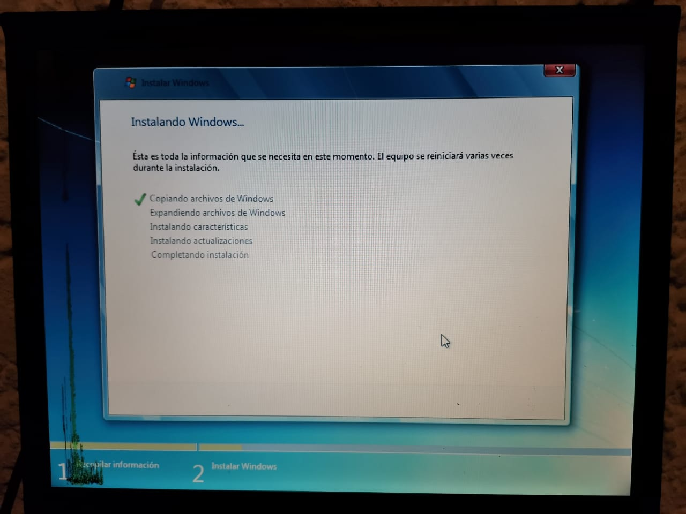

Windows 7
En este tutorial vamos a explicar los pasos a seguir para instalar Windows 7 en nuestro equipo. Instalaremos Windows 7 Professional 32 bits, pero el proceso de instalación para el resto de versiones de Windows 7 es similar.

Requerimientos del sistema
- Procesador de 1 GHz (de 32 bits o 64 bits).
- 1 GB de memoria RAM (para versiones de 32 bits), ó 2 GB de memoria RAM (para versiones de 64 bits).
- 16 GB de espacio en el disco duro (para versiones de 32 bits), ó 20 GB de espacio en disco (para versiones de 64 bits).
- Tarjeta gráfica con soporte DirectX 9 y con driver WDDM 1.0 o superior.
Pasos previos a la instalación de Windows 7
Si cumplimos todo lo anterior, entonces podremos pasar a comenzar a instalar el sistema operativo. Para ello, introduciremos el DVD o USB de Windows 7 y, si fuera necesario, deberemos cambiar en la BIOS el orden de arranque de dispositivos, para que se ejecute el programa de instalación de Windows 7 desde el DVD o USB.


Instalación de Windows 7
Una vez arrancado el programa de instalación, nos aparecerá la siguiente ventana.
Damos click en "Siguiente", de forma que nos aparecerá otra ventana en la cual comenzaremos la instalación.
Damos click en "Instalar ahora", de forma que se iniciará el programa de instalación.
En la siguiente ventana, aceptamos los términos de licencia y damos click en "Siguiente".
Ahora tendremos que elegir si queremos actualizar a Windows 7 desde una versión anterior de Windows ya instalada previamente, o si queremos realizar una instalación nueva. Eligiendo la opción "Personalizada".

Elegimos la partición o disco que deseamos.
Si tenemos ya creada previamente una partición o si tenemos un espacio libre sin particionar y no queremos hacer particiones (se pueden crear particiones posteriormente), entonces seleccionamos el disco o partición donde se instalará Windows 7, damos click en "Siguiente".
Nos aparecerá la siguiente ventana, damos click en "Aceptar".
De esta manera, el proceso de instalación de Windows 7 comienza.
Durante el proceso, se reiniciará el sistema varias veces. Tras los reinicios se iniciará de nuevo el asistente para continuar con los pasos de la instalación. Deberemos ser pacientes, pues tardará un poco en instalar el sistema operativo.



Despues de terminar, nos pedirá un nombre de usuario y de equipo, los escribimos y damos click en "Siguiente".
Despues nos aparecerá una ventana para escribir la contraseña y confirmación para nuestro usuario, así como un indicio, damos click en "siguiente".

Llegados a este punto, se nos pedirá la clave de producto de Windows . Si la tenemos, la escribimos y pulsamos en "Siguiente". En caso de no tenerla, marcaremos la casilla "Activar Windows automáticamente cuando esté conectado".
Nos pedirá que escojamos si queremos instalar solamente las actualizaciones de seguridad y las que Microsoft considere como importantes, o si queremos usar la configuración recomendada por Microsoft. Recomendamos escoger la opción “Instalar sólo las actualizaciones importantes”.
Escogeremos la fecha y hora del sistema, así como la zona horaria en la que nos encontremos, y damos click en "Siguiente".
En este punto, tendremos que elegir la configuración de red que tendrá el sistema, dependiendo de dónde esté conectado. Elegimos la opción que más se ajuste a las características de nuestro sistema. En nuestro caso, elegimos "Red doméstica".

En este momento, ya hemos terminado la instalación y podemos ver el escritorio de Windows 7.